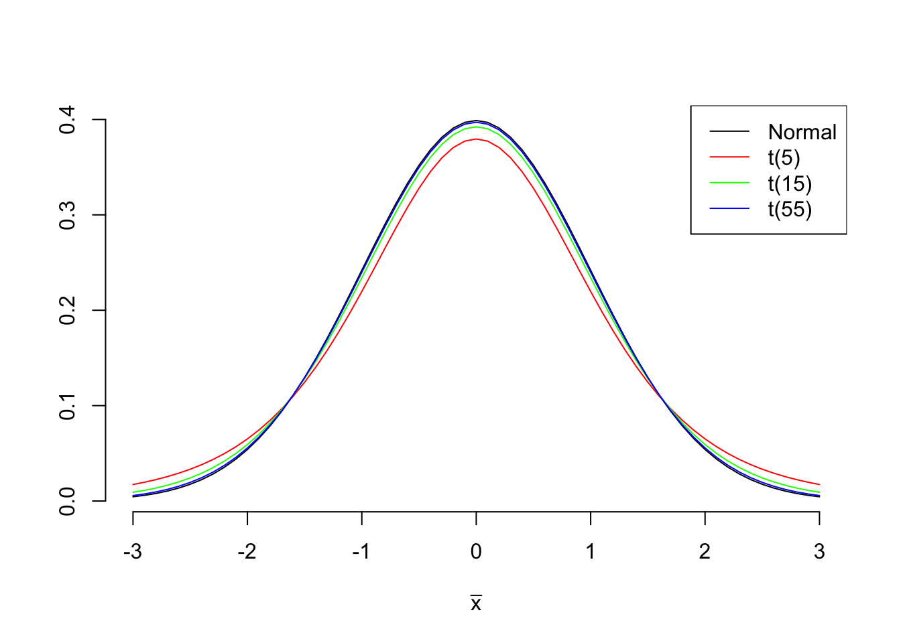
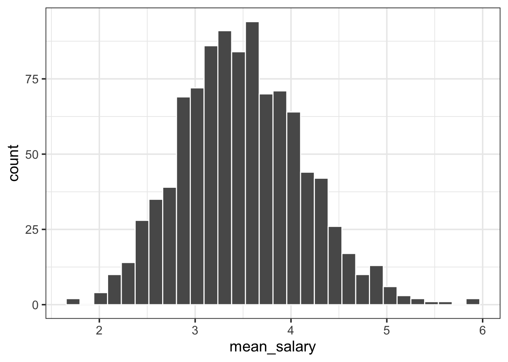
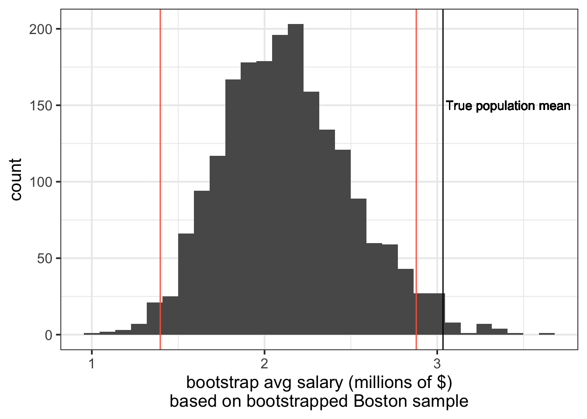

Confidence Intervals & Bootstrapping
LEARNING OBJECTIVES
- Understand how to construct a confidence interval for an unknown parameter of interest.
- Understand the link between bootstrap-based standard errors and theory-based standard errors.
- Understand how bootstrapping can be used to approximate a sampling distribution.
Introduction
Without loss of generality, we will consider the sample mean as the statistic of interest and we will consider two scenarios:
- Entire population data available (unlikely);
- Entire population data are NOT available (more common).
For both scenarios, we will investigate the following question:
What was the average yearly salary of a National Football League (NFL) player in 2015?
A. Population data available (unlikely)
If we have data on the entire population of NFL players and we are interested in a parameter such as the population mean salary, we can simply compute the mean on the available population data. There would be no uncertainty and nothing to estimate: we have the entire population data, so we can compute the mean salary, and we would find what the actual parameter value is.
In this scenario, we would have a file containing the yearly salaries (in millions of dollars) for all players being paid at the start of 2015 by a National Football League (NFL) team. This entire dataset represents the population of all National Football League players in 2015.
The data on the entire population:
library(tidyverse)
nfl_pop <- read_csv("https://uoepsy.github.io/data/nflpop.csv")
head(nfl_pop)## # A tibble: 6 × 5
## Player Position Team TotalMoney YearlySalary
## <chr> <chr> <chr> <dbl> <dbl>
## 1 Russell Wilson QB Seahawks 140 35
## 2 Ben Roethlisberger QB Steelers 68 34
## 3 Aaron Rodgers QB Packers 134 33.5
## 4 Jared Goff QB Rams 134 33.5
## 5 Carson Wentz QB Eagles 128 32
## 6 Matt Ryan QB Falcons 150 30The population mean salary:
nfl_pop_mean_salary <- mean(nfl_pop$YearlySalary)
nfl_pop_mean_salary## [1] 3.033404Above we actually had the data on the entire population available, meaning that we can actually know the population parameter (the average yearly salary of NFL players in 2015) with no uncertainty.
Say we wanted to check whether 1 million was a plausible average yearly salary for a NFL player in 2015. There answer is no, it isn’t. We know the actual average salary which is 3.03 millions, and this is different from 1 million.
NA. Population data NOT available (more common)
Now suppose we didn’t know anything from the previous section (Section A).
In most research, the data for the entire population is not available: typically we cannot afford to collect data on the entire population. As a consequence, we cannot compute the population parameter, which is unknown, and we must rely on random sampling to estimate it. It is good practice to use a sample size as large as we can afford.
Let’s pretend for now that we don’t have the entire NFL population data, and are only able to collect data for 50 players. Fortunately someone else did it for us: they chose 50 players at random and interviewed them to find out their salary. The sample data are:
nfl_sample <- read_csv("https://uoepsy.github.io/data/nflsamp.csv")
nfl_sample## # A tibble: 50 × 5
## Player Position Team TotalMoney YearlySalary
## <chr> <chr> <chr> <dbl> <dbl>
## 1 Kemoko Turay 43DE Colts 5.22 1.30
## 2 Michael Deiter LG Dolphins 3.81 0.954
## 3 Brandon Marshall LB Raiders 0.805 0.805
## 4 Josh Doctson WR Vikings 0.72 0.72
## 5 Kendall Fuller CB Chiefs 3.12 0.781
## 6 Brandon Bolden RB Patriots 3.7 1.85
## 7 Jessie Bates III S Bengals 4.95 1.24
## 8 Aaron Jones RB Packers 2.60 0.65
## 9 Robbie Gould K 49ers 19 4.75
## 10 Kyler Murray QB Cardinals 35.2 8.79
## # … with 40 more rowsWe estimate the unknown population mean salary (what we are interested in) with the sample mean salary, which we can compute from the obtained sample. The sample mean salary represents our “best guess” of the population mean salary.
nfl_sample_mean_salary <- mean(nfl_sample$YearlySalary)
nfl_sample_mean_salary## [1] 3.51726The average salary in the sample of 50 NFL players is 3.52 millions.
Without knowledge of the full data, we would say that we estimate the average salary of an NFL player in the year 2015 to be 3.52 millions.
KEY QUESTION
How precise is that estimate?
Confidence Interval
We do not want to report a single number as the estimate, as we know that our estimate will almost certainly differ from the true value of the population parameter. We probably want to be cautious and report a range of plausible values for the parameter, known as confidence interval (CI), which is more likely to capture the true value of the parameter. See the following image for a summary of the idea:

Figure 1: Source: moderndive.com
To get the range of plausible values, we will use the fact that in a Normal distribution 95% of the values are roughly between the mean - 2 SD and the mean + 2 SD. See here for more details.
We know that the sample mean follows a normal distribution, and we also know that the standard deviation of the sampling distribution of the mean is also known as the standard error (SE).
However, we cannot obtain the standard error of the mean as we do not have the data on the entire population. If we used the formula for the standard error, \(SE = \sigma / \sqrt{n}\), we would need to know the population standard deviation \(\sigma\) (which we don’t). If we wanted to compute the SE by (a) repeatedly sampling from the population, (b) computing the mean on each sample, and (c) taking the standard deviation of the means, we still couldn’t as we simply cannot repeatedly sample from the population: we only have ONE sample.
This week we investigate two methods for estimating the standard error of a statistic that only uses the original sample and as such is applicable when data on the entire population is not available.
- Theory-based SE and CI
- Bootstrap-based SE and CI
1. Theory-based SE and CI
This section investigates the so-called theory-based standard error and confidence interval. The name comes from the fact that no resampling is needed and a mathematical formula from probability theory is used to obtain the SE when the entire population data are not available.
Let \(\mu\) be the population mean and \(\sigma\) the population standard deviation. In Week 11 of semester 1 you saw that
- the sample mean \(\bar X\) follows a normal distribution;
- its average \(\mu_{\overline X}\) is equal to the unknown population mean \(\mu\);
- its standard deviation is equal to \(\sigma_{\overline X} = SE = \sigma / \sqrt{n}\), also known as the standard error of the mean.
\[ \bar X \sim N(\mu_{\overline{X}}, \sigma_{\overline{X}}) \quad \text{where} \quad \begin{cases} \mu_{\overline{X}} = \mu \\ \sigma_{\overline{X}} = SE = \frac{\sigma}{\sqrt{n}} \end{cases} \]
Property 1 tells us that if we computed the sample mean on many samples from the population and created a histogram, this would be bell-shaped like a Normal distribution. So, the sampling distribution of the mean is a Normal distribution.
Property 2 tells us that the sampling distribution of the mean is centred at the unknown population mean \(\mu\). So, on average our sample means are close to the true but unknown population mean.
Property 3 tells us that the spread (standard deviation) of the sampling distribution is \(\sigma_{\overline X} = \sigma / \sqrt{n}\).
Finding the central 95% probability
Recall this image for a generic \(X \sim N(\mu, \sigma)\) distribution:

The middle 95% probability lies between the values \(x = \mu - 2 \sigma\) and \(x = \mu + 2 \sigma\).
To be more precise, the values between which lies the central 95% probability are those quantiles cutting 0.025 probability to the left and 0.025 probability to the right (= 0.975 to the left).
qnorm(c(0.025, 0.975)) # note that: 0.975 - 0.025 = 0.95## [1] -1.959964 1.959964Meaning that 95% of the values in a normal distribution are between
\[ [\mu - 1.96 \cdot \sigma, \ \mu + 1.96 \cdot \sigma] \]
Replacing \(\mu\) and \(\sigma\) with \(\mu_{\overline X}\) and \(\sigma_{\overline X}\) we obtain the 95% confidence interval for the sample mean \(\bar X \sim N(\mu_{\overline X}, \sigma_{\overline X})\). That is, roughly 95% of the values are between
\[ [\mu_{\overline X} - 1.96 \cdot \sigma_{\overline X},\ \mu_{\overline X} + 1.96 \cdot \sigma_{\overline X}] \]
Substituting the formula for the \(SE = \sigma_{\overline X} = \sigma / \sqrt{n}\), we know that 95% of the values are roughly between:
\[ \left[ \mu - 1.96 \cdot \frac{\sigma}{\sqrt n},\ \mu + 1.96 \cdot \frac{\sigma}{\sqrt n} \right] \]
The formula above is the 95% confidence interval for the population mean.
There is one problem though… The confidence interval depends on \(\mu\) and \(\sigma\), the population mean salary and population standard deviation.
When we don’t have the entire population data and we can only afford ONE sample, we do not have \(\mu\) and we also do not have \(\sigma\). We estimated \(\mu\) with the sample mean \(\bar x\), and we must also estimate \(\sigma\) with the sample standard deviation \(s\).
The standard error becomes:
\[ SE = \frac{s}{\sqrt n} \qquad \text{where } s = \text{sample standard deviation} \]
and the confidence interval for the population mean becomes:
\[ \left[ \bar x - 1.96 \cdot \frac{s}{\sqrt n},\ \bar x + 1.96 \cdot \frac{s}{\sqrt n} \right] \]
However, that formula is not quite right! As we do not have the population standard deviation \(\sigma\), we estimate it with the sample standard deviation \(s\). This brings an extra element of uncertainty.
Because we are unsure about the actual value of the population standard deviation, the resulting distribution is no longer Normal, but a distribution that is more “uncertain” and places higher probability in the tails of the distribution, meaning that larger or lower values could be observed with a higher chance.
When the population standard deviation is unknown, the sample mean follows a t-distribution.
The t-distribution depends on a number called the degrees of freedom (DF) of the distribution, which is related to the sample size. The degrees of freedom are equal to the sample size - 1, i.e. \(df = n - 1\). Because of this, we refer to the distribution of the sample mean as the \(t(n-1)\) distribution.
t-distributions with smaller degrees of freedom (corresponding to smaller samples) put more probability on the tails of the distribution, meaning more uncertainty. As the degree of freedom increases, the t-distribution is indistinguishable from the Normal distribution, and this happens approximately with df \(\geq\) 30.

Because the distribution has changed, we need to find the new values containing 95% of the probability. These are no longer -2 and 2 and will vary with the distribution.
Consider a sample of size \(n = 10\). The corresponding df = 10 - 1 = 9. The values in between which lies the middle 0.95 probability are:
# quantiles of a t-distribution with 9 df
qt(c(0.025, 0.975), df = 9)## [1] -2.262157 2.262157These two values have, respectively, a probability of 0.025 to the left and 0.025 to the right.
Hence, for a t(9) distribution, 95% of the values are between:
\[ \left[ \bar x - 2.26 \cdot \frac{s}{\sqrt n} ,\ \bar x + 2.26 \cdot \frac{s}{\sqrt n} \right] \]
Example
Consider again the sample of 50 NFL players. We want to report not only an estimate for the mean salary, but also a range of plausible values, indicating the precision of our estimate.
nfl_sample## # A tibble: 50 × 5
## Player Position Team TotalMoney YearlySalary
## <chr> <chr> <chr> <dbl> <dbl>
## 1 Kemoko Turay 43DE Colts 5.22 1.30
## 2 Michael Deiter LG Dolphins 3.81 0.954
## 3 Brandon Marshall LB Raiders 0.805 0.805
## 4 Josh Doctson WR Vikings 0.72 0.72
## 5 Kendall Fuller CB Chiefs 3.12 0.781
## 6 Brandon Bolden RB Patriots 3.7 1.85
## 7 Jessie Bates III S Bengals 4.95 1.24
## 8 Aaron Jones RB Packers 2.60 0.65
## 9 Robbie Gould K 49ers 19 4.75
## 10 Kyler Murray QB Cardinals 35.2 8.79
## # … with 40 more rowsWe need a few elements according to our discussion above:
- \(\bar{x}\), the sample mean which we already computed before
- \(s\), the sample standard deviation
- \(n\), the sample size
- the new multipliers to the SD based on the \(t(n-1)\) distribution
nfl_sample_mean_salary## [1] 3.51726nfl_sample_sd_salary <- sd(nfl_sample$YearlySalary)
nfl_sample_sd_salary## [1] 4.613546n <- nrow(nfl_sample)
n## [1] 50qt(c(0.025, 0.975), df = n - 1)## [1] -2.009575 2.009575The formula to use:
\[ \left[ \bar x - 2.01 \cdot \frac{s}{\sqrt n} ,\ \bar x + 2.01 \cdot \frac{s}{\sqrt n} \right] \]
In R:
nfl_sample_mean_salary - 2.01 * (nfl_sample_sd_salary / sqrt(n))## [1] 2.205827nfl_sample_mean_salary + 2.01 * (nfl_sample_sd_salary / sqrt(n))## [1] 4.828693The 95% confidence interval is then [2.21, 4.83] million dollars. We would write this up as:
We are 95% confident that the average salary of a NFL player in 2015 is between 2.21 and 4.83 million dollars.
2. Bootstrap-based SE and CI
Since this section involves sampling, I will set the random seed for reproducibility.
set.seed(9876)Recall today’s setting: we only have ONE sample, and as such we do not have the sampling distribution and we do not have the standard error. We will now discuss another approach to find the standard error. The answer is bootstrap!
When the full population data is available, the sampling distribution is constructed by evaluating the sample mean on many samples from the population.
When only ONE sample is available, rather than the population, we repeatedly sample WITH REPLACEMENT from the original sample, using the same sample size as the original sample.
The idea is that the population is made up of many, many copies of the elements in the sample. Sampling with replacement from the original sample is equivalent to creating an imaginary population consisting of many copies of that sample, and then repeatedly sampling from the imaginary population.

Example
Let S be the sample and P the imaginary population consisting of (say 50) repetitions of the original sample:
S = tibble(salary = c(11, 55, 88))
S## # A tibble: 3 × 1
## salary
## <dbl>
## 1 11
## 2 55
## 3 88P = tibble(salary = rep(c(11, 55, 88), 50))
P## # A tibble: 150 × 1
## salary
## <dbl>
## 1 11
## 2 55
## 3 88
## 4 11
## 5 55
## 6 88
## 7 11
## 8 55
## 9 88
## 10 11
## # … with 140 more rowsIf we sample from P, we can get repeated values:
source('https://uoepsy.github.io/files/rep_sample_n.R')
rep_sample_n(P, n = 3)## # A tibble: 3 × 2
## sample salary
## <dbl> <dbl>
## 1 1 55
## 2 1 55
## 3 1 88rep_sample_n(P, n = 3)## # A tibble: 3 × 2
## sample salary
## <dbl> <dbl>
## 1 1 55
## 2 1 88
## 3 1 88Which is the same as sampling with replacement. That is, once a value is chosen, it is “put back” in the sample and it can be picked again. To sample with replacement add the argument replace = TRUE to the rep_sample_n function:
rep_sample_n(S, n = 3, replace = TRUE)## # A tibble: 3 × 2
## sample salary
## <dbl> <dbl>
## 1 1 55
## 2 1 88
## 3 1 88rep_sample_n(S, n = 3, replace = TRUE)## # A tibble: 3 × 2
## sample salary
## <dbl> <dbl>
## 1 1 88
## 2 1 11
## 3 1 55If we sampled without replacement, we would always end up with the original sample. In fact, if 11 was picked, for the remaining 2 value we could only pick 55 or 88. If 88 was picked next, we would only be left with 55 for the last value leading us to a sample of 11, 88, 55.
rep_sample_n(S, n = 3, replace = FALSE)## # A tibble: 3 × 2
## sample salary
## <dbl> <dbl>
## 1 1 55
## 2 1 88
## 3 1 11rep_sample_n(S, n = 3, replace = FALSE)## # A tibble: 3 × 2
## sample salary
## <dbl> <dbl>
## 1 1 11
## 2 1 55
## 3 1 88Bootstrap sample
A bootstrap sample is obtained by
- random sampling from the original sample
- with replacement
- using the same sample size as the original sample
Now, we approximate the sampling distribution with a boostrap distribution, which is constructed by evaluating the sample mean on many bootstrap samples.
The steps to estimate an unknown population mean \(\mu\) are the following:
- Collect a sample and use the sample mean \(\bar x\) as the estimate
- Obtain many bootstrap samples
- Obtain the bootstrap means by computing the mean of each bootstrap sample
- The bootstrap SE is the standard deviation of the bootstrap means
Example
- Collect a sample and compute the sample mean. We have already done this before:
nfl_sample## # A tibble: 50 × 5
## Player Position Team TotalMoney YearlySalary
## <chr> <chr> <chr> <dbl> <dbl>
## 1 Kemoko Turay 43DE Colts 5.22 1.30
## 2 Michael Deiter LG Dolphins 3.81 0.954
## 3 Brandon Marshall LB Raiders 0.805 0.805
## 4 Josh Doctson WR Vikings 0.72 0.72
## 5 Kendall Fuller CB Chiefs 3.12 0.781
## 6 Brandon Bolden RB Patriots 3.7 1.85
## 7 Jessie Bates III S Bengals 4.95 1.24
## 8 Aaron Jones RB Packers 2.60 0.65
## 9 Robbie Gould K 49ers 19 4.75
## 10 Kyler Murray QB Cardinals 35.2 8.79
## # … with 40 more rowsnfl_sample_mean_salary## [1] 3.51726- Obtain many bootstrap samples and compute the bootstrap means
nfl_boot_samples <- nfl_sample %>%
rep_sample_n(n = 50, samples = 1000, replace = TRUE)
nfl_boot_samples## # A tibble: 50,000 × 6
## sample Player Position Team TotalMoney YearlySalary
## <dbl> <chr> <chr> <chr> <dbl> <dbl>
## 1 1 Lance Kendricks TE Chargers 0.93 0.93
## 2 1 Brandon Marshall LB Raiders 0.805 0.805
## 3 1 Christian Jones 43OLB Lions 6.35 3.18
## 4 1 Justin Coleman CB Lions 36 9
## 5 1 Russell Okung LT Chargers 53 13.2
## 6 1 Kemoko Turay 43DE Colts 5.22 1.30
## 7 1 LeShaun Sims CB Titans 2.58 0.645
## 8 1 Markus Golden 34OLB Giants 3.75 3.75
## 9 1 Kendall Fuller CB Chiefs 3.12 0.781
## 10 1 Ryan Succop K Titans 20 4
## # … with 49,990 more rows- Compute the bootstrap means
nfl_boot_means <- nfl_boot_samples %>%
group_by(sample) %>%
summarise(mean_salary = mean(YearlySalary))
nfl_boot_means## # A tibble: 1,000 × 2
## sample mean_salary
## <dbl> <dbl>
## 1 1 3.47
## 2 2 4.13
## 3 3 2.81
## 4 4 3.24
## 5 5 2.44
## 6 6 4.35
## 7 7 4.14
## 8 8 2.63
## 9 9 4.05
## 10 10 2.65
## # … with 990 more rows- Compute the bootstrap SE
nfl_boot_se <- sd(nfl_boot_means$mean_salary)
nfl_boot_se## [1] 0.6364914Let’s visualise the bootstrap distribution
ggplot(nfl_boot_means, aes(x = mean_salary)) +
geom_histogram(color = 'white')
The standard deviation of the bootstrap distribution is the bootstrap standard error.
The bootstrap distribution is an approximation to the sampling distribution (which we cannot obtain)
Warning
The average of the bootstrap distribution is the sample statistic!
This is different from the average of the sampling distribution, which is the population parameter.
mean(nfl_boot_means$mean_salary)## [1] 3.492265nfl_sample_mean_salary## [1] 3.51726Interpreting a confidence interval?
If we were to do this whole process over and over again:
- take a random sample of size \(n\);
- sample with replacement from that sample;
- construct a 95% confidence interval.
Then about 95% of the confidence intervals we created would contain the population mean.
So if we did this 100 times, we would expect about five of our 95% confidence intervals to not contain the true population mean.
And if we had been constructing 80% confidence intervals instead, we would expect roughly 80 of them to contain the population mean.
Bootstrap CI
We can construct a bootstrap confidence interval using two approaches.
1. Using the bootstrap SE
This requires us to find the relevant multipliers from the t-distribution, and use the bootstrap standard error:
\[ [\bar{x} - t^* \cdot SE,\ \bar{x} + t^* \cdot SE] \]
The quantiles of the t-distribution are:
qt(c(0.025, 0.975), df = 49)## [1] -2.009575 2.009575And the confidence interval is:
nfl_sample_mean_salary - 2.01 * nfl_boot_se## [1] 2.237912nfl_sample_mean_salary + 2.01 * nfl_boot_se## [1] 4.796608We are 95% confident that the average salary of a NFL player in 2015 is between 2.24 and 4.80 million dollars.
2. Using the percentiles of the bootstrap distribution
We can directly find the quantiles of the bootstrap distribution that have 0.025 probability to the left and 0.025 probability to the right, i.e. 0.95 in between them.
Because we are not using a probability distribution, but data we computed, we must use the quantile() function. This takes the data as first argument, and the probabilities as second.
quantile(nfl_boot_means$mean_salary, probs = c(0.025, 0.975))## 2.5% 97.5%
## 2.345297 4.840337We are 95% confident that the average salary of a NFL player in 2015 is between 2.35 and 4.84 million dollars.
Glossary
Population. The entire collection of units of interest.
Sample. A subset of the entire population.
Parameter. A fixed but typically unknown quantity describing the population.
Statistic. A quantity computed on a sample.
Sampling distribution. The distribution of the values that a statistic takes on different samples of the same size and from the same population.
Standard error. The standard error of a statistic is the standard deviation of the sampling distribution of the statistic.
Resample. To sample again from your original sample
Bootstrapping. Repeated random sampling with replacement
Bootstrap distribution. The distribution of statistics calculated on random resamples. Approximates the sampling distribution of the sample statistic.
Confidence interval (CI). A range of plausible values around an estimate (e.g., a sample statistic), taking into account uncertainty in the statistic (e.g., sampling variability)
Confidence level. The percentage of confidence intervals which will contain the true population parameter in the long run (i.e., if you sampled the population and constructed confidence intervals many times over). The proportion of all samples whose intervals contain the true parameter.
Exercises
Remember you will need to “source” the rep_sample_n() function into your environment.
Paste this code and make sure it appears in the top-right pane of RStudio.
source('https://uoepsy.github.io/files/rep_sample_n.R')A. Hollywood Movies
The following code chunk reads in a sample of the Hollywood movies data we saw last week.
hollywood_sample <- read_csv("https://uoepsy.github.io/data/hollywoodsample1.csv")This week, we’re interested in the average Rotten Tomatoes rating for all Hollywood movies between 2007 and 2013.
What is our best estimate of this with the data we just read in?
Generate 2000 bootstrap resamples to create the bootstrap distribution. Store it as an object in R with the name hollywood_bs.
Estimate the standard error of the sample statistic from your bootstrap distribution.
Compute the 95% confidence intervals around our estimate of the average Rotten Tomatoes rating, and plot the bootstrap distribution and the confidence interval.
Hint: geom_vline().
Here is a new sample, but this time it contains 50 movies. Do the same (estimate the mean and construct a confidence interval). How does the confidence interval differ from the one created for a sample of 25?
hollywood_sample2 <- read_csv("https://uoepsy.github.io/data/hollywoodsample2.csv")
Using the theory-based approach for the standard error, construct 95% and 99% confidence intervals around the mean Rotten Tomatoes rating based on the sample of 50 movies.
Given that for the 99% confidence interval we will have greater confidence that it will contain the true population parameter than the 95% confidence interval, do we expect the range to be bigger or smaller?
B. NFL Players
Scroll back up - what was the population mean yearly salary for all NFL players at the beginning of 2015?
A researcher lives in Boston. They want to estimate salaries of NFL players, and in 2015 they go around and ask 50 players about their yearly salaries.
The code below reads in the sample they collected.
nfl_boston <- read_csv("https://uoepsy.github.io/data/nflboston.csv")Compute the sample mean, and calculate 95% confidence intervals via bootstrap standard error
This confidence does not include the population mean of 3.03. Why not?
ggplot(nfl_bs, aes(x=avg_salary)) +
geom_histogram() +
labs(x = "bootstrap avg salary (millions of $)\nbased on bootstrapped Boston sample") +
geom_vline(xintercept = mean(nfl_pop$YearlySalary))+
geom_text(x=3.05, y=150,label="True population mean",hjust=0)+
geom_vline(xintercept = c(mean(nfl_boston$YearlySalary) - 1.96 * sd(nfl_bs$avg_salary), mean(nfl_boston$YearlySalary) + 1.96 * sd(nfl_bs$avg_salary)), col="tomato1")
Hint: Look at your data, and think about what you know about how it was collected - why might this not be a good sample?